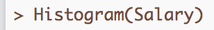

1 Introduction to R
Data analytics is a fast developing, exciting topic of research and application that impacts many areas of our lives. We are today experiencing an authentic knowledge revolution that integrates the statistical analysis of data using computers. Here you are introduced to data analytics. After you spend a few hours learning the basics of the R software system for analytics, the rest is straightforward. From a small investment in learning how the system works, you gain access to much data analytic prowess using one of the primary languages of modern data science.
1.1 Overview
We begin with some basic concepts of data analytics. All data analysis, as in 100%, is done on the computer. We use R (R Core Team 2022) as the app for data analytics, the same analysis system many data scientists use doing real data science throughout the world.
A core set of tasks form part of every analytics project:
- Read the data from a computer file into the analysis system, here R.
- Count the data values recorded for each variable with either a bar chart for a variable with few unique values or a histogram for a variable with many unique values.
The following content explains how to access and use R to accomplish these essential tasks. Sequentially follow the provided instructions, from downloading R to your computer or use in the cloud, reading data into R, and then analyzing that data. Besides the provided, self-sufficient written instructions, also find optional referenced videos and reading material. To extend your analytic skills beyond the material presented here, reference the article Gerbing (2021), or the book Gerbing (2023) for a wide range of data analyses illustrated and explained in detail.
Work through the following content step-by-step. Each step is straightforward. Skipping steps or skimming the content, however, leads to nowhere except confusion.
Get the basics down, and the rest readily follows.
1.1.1 R vs. Excel
Excel and R analyze data from function calls. You already know more about using R than you thought you did. Excel implements many built-in functions, plus user-defined functions (which Excel calls macros), and so does R.
Function: Set of instructions to perform the computations that transform data values into the results, the output of the analysis.
The input into a data analysis function is data. The output of a function can appear in several forms:
- text in the form of writing and tables
- data visualizations in a graphics format such as pdf or png
- data transformed from the original input data.
To run an R program is to process the code, which consists of a sequence of activating functions to accomplish a corresponding sequence of analyses.
1.1.1.1 Function Calls

R and Excel differ on how to instruct a function to do its work. To illustrate, consider the following six data values, the annual salaries of six employees at a company. Find the variable name Salary in the first row of the Excel worksheet that contains the data values, listed in the same column under the variable name. The standard organization of data for analysis lists the variable names in the first row. List data values for that variable in the corresponding column, beginning in the second row.
What is the average salary? Compute the average, more technically called the (arithmetic) mean, either with the Excel function average() or with the R function mean(). Both functions provide the same result, but the respective languages name their functions differently.
Function call: Process the computations of a function from within a data analysis system such as Excel or R.
With Excel, enter the function call into a cell in the worksheet, sharing the same type of storage area, a worksheet cell, as the data itself.
In this example, enter the function call beneath the column of data into the 8th cell in Column A. Specify the data for analysis with a cell range, such as the relative cell range A2:A7. This cell range refers to cells in the same column relative to the cell in which to enter the function call. This cell range extends from the cell in the second row of Column A to the cell in the seventh row.
R works differently. Unlike Excel, R separates the data from the instructions to analyze that data, an advantage that contributes to the power of R for data analysis. The instructions are processed in an area separate from the data.
Command line: R presents a prompt,
>, which indicates where to enter instructions for data analysis.
Invoke R functions from the command line at the prompt.

After entering an instruction in response to the >, press Enter/Return, which instructs R to process the instruction, and then display a new prompt on a new command line. Instructions for an R data analysis consist of at least several lines of code entered at successive command lines.
R can directly read data stored within an Excel worksheet. To begin this analysis, read the Excel worksheet into R from an instruction you enter at the command line. Suppose a variable in the worksheet is named Salary. To create the histogram of Salary, as well as summary statistics such as the mean, call the Histogram() function, referencing Salary.

That is it. To get the histogram and summary statistics of Salary, at the command line prompt enter Histogram(Salary). To analyze the data values for a variable in R, always refer to the variable’s name within the parentheses. Always be aware of the exact spelling of the variable names that define the data, including capitalization, in this case beginning the function reference with an uppercase H`.
As with the Excel example, there is no programming involved in this histogram analysis with R. The programming was done by the people who wrote the functions. Instead of programming code, enter a simple function call to analyze the data. In this example, the R function accomplished much more than the computation of a simple mean. Achieving the equivalent analysis with Excel, just getting the histogram itself, involves much more work.
We have seen that both Excel and R analyze the data values for a variable organized within a column, though with different user interfaces. R, however, presents several advantages.
1.1.1.2 Advantages of R
Data scientists use R (or similar languages) for their analyses instead of Excel. Some reasons for the preference for R and related languages follow.
- Excel is great for data entry and viewing data as a spreadsheet app, but provides only the most basic statistical computations. Excel is not a serious app for data analysis.
-
Once the concept of working with an app like R is understood, less time is required to conduct an analysis even directly from Excel data, such as entering a simple
Histogram(Salary), than can be obtained with the more cumbersome set of procedures offered by Excel. - R does Big Data, efficiently handling data sets with millions of rows of data, limited only by the computer’s available memory.
-
R separates the instructions for the analysis of data from the data. This separation makes debugging errors much more straightforward than complicated Excel files that can include multiple, linked worksheets that can more easily hide errors.
- Obtain each R analysis with one or more instructions, function calls, that can be saved for future use instead of irrecoverable mouse clicks. The results of R analyses are reproducible.
The multiple instructions to perform an R analysis document exactly how to conduct the analysis. As shown later, save these instructions in a file for later use to repeat the analysis.
Reproducibility: Analyses can be re-run in the future to reproduce previously obtained results.
In real world data analysis no one enters code directly into R. Instead the analyst writes the R instructions into a file, able to retrieve and re-run the instructions at any time. Saving the R code allows for reproducible analysis.
The saved R code instructs how to accomplish the analysis, a set of instructions anyone with access can repeat. The instructions for analyses done by one person become accessible to all applicable members of your organization at any subsequent point in time, including yourself. On the contrary, those Excel mouse clicks disappear into digital dust.
As I wrote in the Journal of Statistics and Data Science Education Gerbing (2021):
From the perspective of data science, Excel worksheets exhibit a fundamental flaw, the confounding of the data with the instructions to process that data. Both data and data processing instructions are entered into adjacent cells stored within the same worksheet. On the contrary, R and Python separately store data and data processing instructions into different files (p. 251).
Much better to separate your data from the code. Countless overly complex Excel worksheets that model business processes are horrendous to debug and understand in their complexity. Let the (moderate size) data reside within Excel, but use R or similar language to write your code that manipulates and analyzes your data. If needed, export the results of your specified computations back to Excel. R writes data to Excel files as easily as it reads data from Excel worksheets.
Separate your data from your code to manipulate that data. Data analysis programming languages such as R and Python provide that separation. In my opinion, Excel is vastly overused and a detriment to many business operations. Welcome, instead, to the world of real data science.
1.1.2 lessR Enhancements
Standard R is for geeks. R analyses typically involve writing programming code well beyond just a few function calls. I have made using R for basic data analysis much more straightforward with my 45 or so functions that complement the standard R functions, such as my Histogram() function. These functions, and the much more extensive and helpful error diagnostics they provide, result in a more or less “un-geeked” R. The set of these functions are included in the package called lessR, the basis for my article in the Journal of Statistics and Data Science Education.
lessR organizes functions into what the R ecosystem refers to as a package. The full R ecosystem, available on servers worldwide, consists of the hundreds of base (standard) R functions included with the installation of R, plus the functions found in additional packages that fulfill a strict set of requirements before published on the R servers. Downloading R installs all the base R functions. Separately download packages such as lessR to access additional functions, all accessed via the standard R environment.
1.2 Getting Started
Download and install R on your computer, or run via a web browser in the cloud. The choice is yours. R works the same regardless of the platform on which it is run. Of course, running in the cloud requires an active Internet connection. With your data and your data processing app on your own computer you maintain a level of independence and security not available with cloud processing, but to run R locally you do need a computing device with more than just a web browser.
Read one of the two following sections:
- In the Cloud
or
- On Your Computer
No need to read both sections unless you are curious about exploring both venues. If you wish, you can also use both approaches, switching back and forth, but usually no need to do, unless you carry around an iPad or related when away from home and use your computer when at home. After accessing R on either your computer or the cloud, the next step is to download and access lessR.
1.2.1 In the Cloud
From the cloud, access R with a web browser on any computing device, such as a Chromebook or an iPad.
1.2.1.1 The Cloud
The cloud: One or more computer servers, usually in locations unknown to the users, that run applications accessed via a standard web browser.
An important company in the R ecosystem, Posit (formerly RStudio, Inc.), provides a free, though limited, cloud account for running R within the app called RStudio at posit.cloud. Most people run R from within RStudio. In general, running R in the cloud is the same as running R on your computer. Just from examining the RStudio window you could not tell if you were running in the cloud or on your computer except that the listed file directory under the Files tab begins with Cloud.
A free Posit account is limited in the sense that only 25 free hours are available per month. The good news is that 25 hours should be plenty of time to complete the assignments in the typical course that does basic data analysis on small to moderate size data sets. However, this time limit is not just the time the computer requires to perform the data analysis computations but also includes the time that a cloud project is open. Wait to log into your account until you are ready to enter the commands needed to do an analysis, and then log out of your account when an analysis is complete. View your account status by clicking on the icon at the top-right with your initials.
Off-loading computer processing from your computer to the cloud, or even doing analysis without a standard computer, such as doing R analysis via a Chromebook or iPad, can save money. Typically not needed, but even paying a small amount for monthly access to R in the cloud can be much cheaper than buying a computer or upgrading to a more powerful computer. Of course, the strategy of off-loading computer processing and storage applies to not just running R, but to many types of data processing. Many companies now maintain and access data bases in the cloud. Many people store not just data files, but photographs, videos and other types of information in the cloud.
1.2.1.2 Instructions
Access an R cloud account at:
https://posit.cloud/Create a free account at the prompt, and you are ready to go.
1.2.1.2.1 New project
Organize your analyses by project, maybe one project for all your homework assignments. Each project corresponds to a different data analysis project. To get started, select the New Project drop-down menu, then New RStudio Project.

Select the initial project name Untitled Project at the top of the window and type in a new name, HW or something.

The next time you login click on that project name you will access R and RStudio ready for analysis exactly as it was when you last left that project.
1.2.1.2.2 Upload data to the cloud
The home directory is in your cloud account, with no direct access to files on your computer. This directory location makes no difference if reading a file from the web. However, if you enter your function calls directly into the R console, to access a data file that resides on your own computer, first upload the data file to your cloud account. To upload, go the right-bottom window pane of your RStudio session and select the Files tab at the top-left of the window pane. Then select the Upload tab, shown in Figure Figure 1.1.

The Files tab reveals the files in your cloud folder. You will see your data file appear there after uploading.
1.2.1.2.3 Logout and login
When finished, at the top-right corner of the web page, click your initials and log out, shown in Figure Figure 1.2.

The next time you log in, either select the project you were working on, or create a new one.
1.2.2 On Your Computer
Running R on your computer, of course, requires to first download the R app to your computer. Although optional, most people also download a second app called RStudio from which to run R. Get both free apps at Download Data Science Apps.
video: download R and RStudio [(3:44)]
1.2.2.1 Download and Run R
R is free and runs the same on any Windows, Macintosh, or Linux/Unix computer. Getting R is straightforward, such as from the above link, which provides the link to download the app from the worldwide network of R servers.
Download R.
From the download link, choose your operating system from the links at the top of the corresponding web page. For Windows, the top of the resulting web page has the download link. For Mac, several paragraphs down, in the left margin, you have a choice. The first link in the margin is for arm64, which is the version for the more recently developed Apple M series processors. A second link, further down the margin, applies to Apple’s older Intel CPU computers. If not sure of your CPU type, go the first choice under the Apple menu, About this Mac, and look at the information for Chip.
Install R. If, during installation, you are asked the question, Install in a personal library? answer y for yes (unless you understand administrative privileges, which are needed if R is installed system-wide).
The installer offers both 32-bit and 64-bit versions. Unless your computer was made around 2012 or earlier, run 64-bit software as you would any other app.
Once downloaded, the installation proceeds as with any app. Accept the given defaults for each step of the process. When installed, run the R app as you would any other application, such as double-clicking on the application’s icon in your file system display. When opened, R displays a window called the console. Enter instructions into the R console command line, where R presents the > prompt.
1.2.2.2 RStudio
Usually, run R from within an app called RStudio because of the additional features that RStudio provides. You can download now, later, or never, but there are some advantages to running R from within RStudio.
From RStudio, you are running R at the standard R console, but within the RStudio environment. As shown in the following figure, RStudio divides the main window into several window panes, all resizable to customize for a specific analysis. The primary window pane is the standard R console, the same console available from running R by itself. A second window pane is where RStudio directs the data visualizations and can also display other information such as your file directory. A third window pane displays your data or your history of entered R instructions.
A potential fourth window pane in the top-left corner provides for files of R code, ready for analysis. Request this fourth window within RStudio by creating a new R script file as shown in Figure Figure 1.3.
File menu --> New File --> R Script
R processes all instructions at the command prompt in the R console. One option is to enter the instructions at the command prompt. The short-coming of this approach is that the instructions need to be repeatedly entered every time the analysis is re-run.
RStudio improves this process by providing a convenient way to both store R instructions in their own file and then run them from the command prompt. An analysis of saved R instructions is reproducible. You can then save the file of R script for later access. You, or someone else in your organization, can repeat or extend the analysis without having to re-type everything.
Create a new R script file from the New File option on the RStudio File menu, which opens the top-left window pane in Figure @ref(fig:RStudio). Then, enter R instructions into the script window, select one or more instructions, and press the Run button at the top-right of the window pane. RStudio will copy the selected information to the command prompt and run the instructions as if you had entered them directly into the console as in Figure Figure 1.4.

Or, click on the Compile Report button and send the input from the Source window and subsequent output to an HTML file for reading with a web browser or a Word document (a pdf option is also available, but requires LaTeX software installed).
Your choice: Enter and run individual instructions at the command line one-by-one or save your instructions over time to gradually build a collection to accomplish a variety of analyses. With this strategy, you can reproduce the output of any one analysis or do a simple modification to obtain a related analysis. Either way your data analyses get done.
Run R by itself, or run R within RStudio. Either way, open the R app directly or open RStudio from which to access R, as you would any app on your computer.
1.2.3 Access lessR
To do a specific analysis, enter into the console, after the > prompt, the name of the function designed to accomplish that analysis. Each function has a name, such as Histogram() to display a histogram. To call a function for data analysis, in response to the R command prompt, >, enter the function name, a left parenthesis, a value such as the variable name for which to do the analysis, and then a matching right parenthesis.
Running R, within RStudio or by itself, on either your computer or in the cloud, one time only, download the lessR package of functions (and associated dependent packages) from the worldwide network of R servers onto your computer. In response to the R console command prompt, >, enter the following instruction (function call) into the R console, either running R by itself or within RStudio. After entering the instruction, press Enter/Return.
video: install lessR [1:28]
Example 1.1
install.packages("lessR")If asked the following question about compilation, answer no.
Do you want to install from sources the package which
needs compilation? (Yes/no/cancel)This installation process involves not only downloading the lessR functions, but also many packages on which lessR depends. The entire process takes some seconds to a minute or so, depending on the speed of your Internet connection.
Once downloaded, R stores the lessR functions in your R library created for you during the installation process. To access these functions for a specific R session, retrieve them from the library.
video: library(“lessR”) [1:04]
Example 1.2
library("lessR")Does it work? If the lessR functions successfully load from your R library the following appears, which includes some instructions for getting started with R/lessR. These instructions include how to read data from files on your computer system into R for analysis and how to access documented examples of various analyses.
lessR 4.2.6 feedback: gerbing@pdx.edu
--------------------------------------------------------------
> d <- Read("") Read text, Excel, SPSS, SAS, or R data file
d is default data frame, data= in analysis routines optional
Learn about reading, writing, and manipulating data, graphics,
testing means and proportions, regression, factor analysis,
customization, and descriptive statistics from pivot tables.
Enter: browseVignettes("lessR")
View changes in this and recent versions of lessR.
Enter: news(package="lessR")
**Newly Revised**: Interactive data analysis.
Enter: interact()If this information does not appear when you enter library("lessR"), then the lessR package is not correctly installed into your R library. Consider running R/RStudio with the free plan in the cloud instead of on your computer.
RStudio will copy the selected information to the command prompt and run the instructions as if you had entered them directly into the console.
Every month or so, update your R packages. To update, enter:
update.packages(ask=FALSE)
This instruction updates lessR as well as the packages upon which lessR depends. Or, if using RStudio, from the Tools menu, select Check for Package Updates....